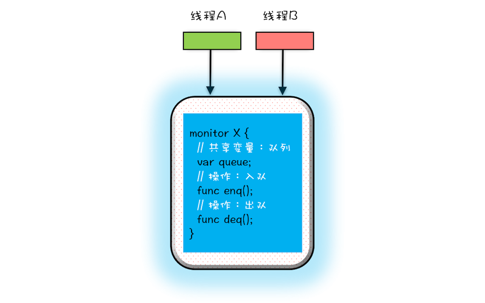
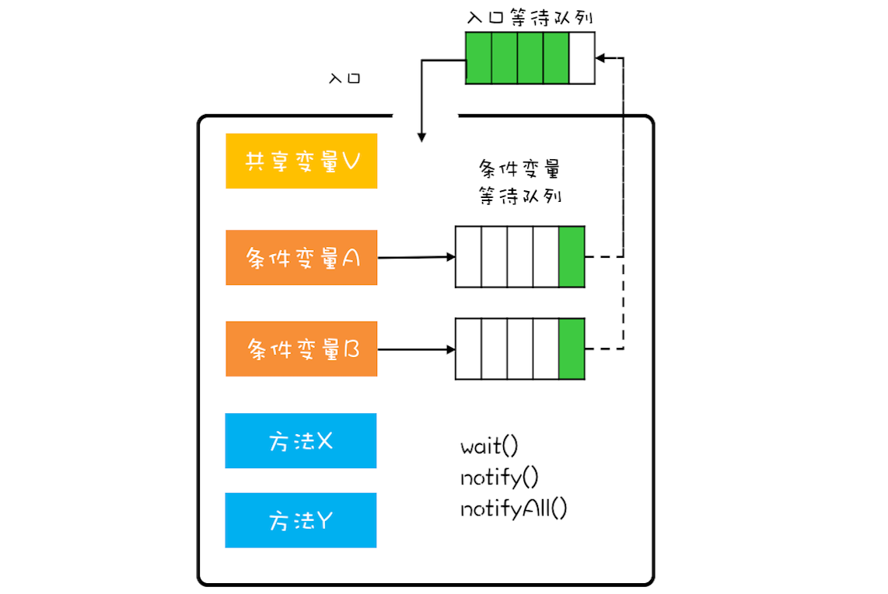
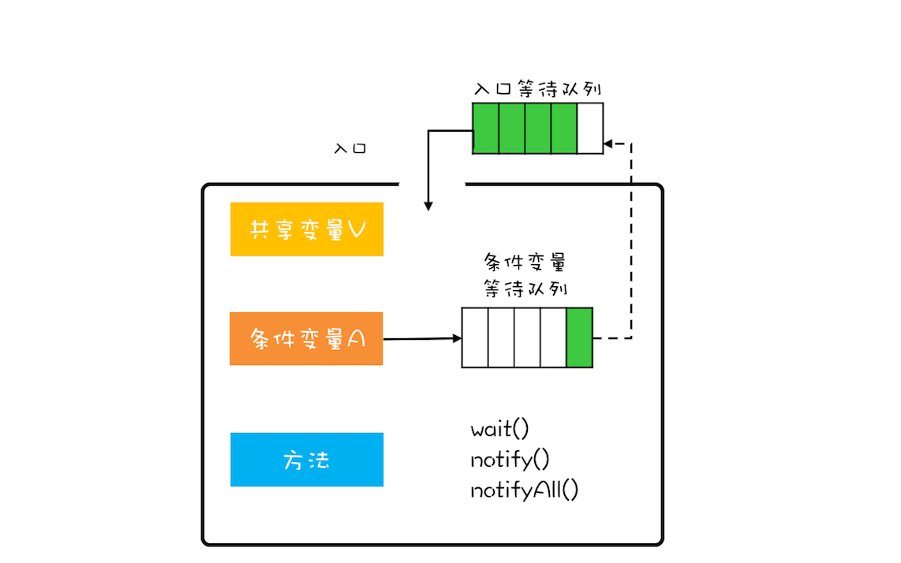

- 00 学习攻略 如何才能学好并发编程？.md
- 00 开篇词 你为什么需要学习并发编程？.md
- 01 可见性、原子性和有序性问题：并发编程Bug的源头.md
- 02 Java内存模型：看Java如何解决可见性和有序性问题.md
- 03 互斥锁（上）：解决原子性问题.md
- 04 互斥锁（下）：如何用一把锁保护多个资源？.md
- 05 一不小心就死锁了，怎么办？.md
- 06 用“等待-通知”机制优化循环等待.md
- 07 安全性、活跃性以及性能问题.md
- 08 管程：并发编程的万能钥匙.md
- 09 Java线程（上）：Java线程的生命周期.md
- 10 Java线程（中）：创建多少线程才是合适的？.md
- 11 Java线程（下）：为什么局部变量是线程安全的？.md
- 12 如何用面向对象思想写好并发程序？.md
- 13 理论基础模块热点问题答疑.md
- 14 Lock和Condition（上）：隐藏在并发包中的管程.md
- 15 Lock和Condition（下）：Dubbo如何用管程实现异步转同步？.md
- 16 Semaphore：如何快速实现一个限流器？.md
- 17 ReadWriteLock：如何快速实现一个完备的缓存？.md
- 18 StampedLock：有没有比读写锁更快的锁？.md
- 19 CountDownLatch和CyclicBarrier：如何让多线程步调一致？.md
- 20 并发容器：都有哪些“坑”需要我们填？.md
- 21 原子类：无锁工具类的典范.md
- 22 Executor与线程池：如何创建正确的线程池？.md
- 23 Future：如何用多线程实现最优的“烧水泡茶”程序？.md
- 24 CompletableFuture：异步编程没那么难.md
- 25 CompletionService：如何批量执行异步任务？.md
- 26 Fork_Join：单机版的MapReduce.md
- 27 并发工具类模块热点问题答疑.md
- 28 Immutability模式：如何利用不变性解决并发问题？.md
- 29 Copy-on-Write模式：不是延时策略的COW.md
- 3 个用户来信 打开一个新的并发世界.md
- 30 线程本地存储模式：没有共享，就没有伤害.md
- 31 Guarded Suspension模式：等待唤醒机制的规范实现.md
- 32 Balking模式：再谈线程安全的单例模式.md
- 33 Thread-Per-Message模式：最简单实用的分工方法.md
- 34 Worker Thread模式：如何避免重复创建线程？.md
- 35 两阶段终止模式：如何优雅地终止线程？.md
- 36 生产者-消费者模式：用流水线思想提高效率.md
- 37 设计模式模块热点问题答疑.md
- 38 案例分析（一）：高性能限流器Guava RateLimiter.md
- 39 案例分析（二）：高性能网络应用框架Netty.md
- 40 案例分析（三）：高性能队列Disruptor.md
- 41 案例分析（四）：高性能数据库连接池HiKariCP.md
- 42 Actor模型：面向对象原生的并发模型.md
- 43 软件事务内存：借鉴数据库的并发经验.md
- 44 协程：更轻量级的线程.md
- 45 CSP模型：Golang的主力队员.md
- 用户来信 真好，面试考到这些并发编程，我都答对了！.md
- 结束语 十年之后，初心依旧.md
08 管程：并发编程的万能钥匙
并发编程这个技术领域已经发展了半个世纪了，相关的理论和技术纷繁复杂。那有没有一种核心技术可以很方便地解决我们的并发问题呢？这个问题如果让我选择，我一定会选择管程技术。Java语言在1.5之前，提供的唯一的并发原语就是管程，而且1.5之后提供的SDK并发包，也是以管程技术为基础的。除此之外，C/C++、C#等高级语言也都支持管程。
可以这么说，管程就是一把解决并发问题的万能钥匙。
什么是管程
不知道你是否曾思考过这个问题：为什么Java在1.5之前仅仅提供了synchronized关键字及wait()、notify()、notifyAll()这三个看似从天而降的方法？在刚接触Java的时候，我以为它会提供信号量这种编程原语，因为操作系统原理课程告诉我，用信号量能解决所有并发问题，结果我发现不是。后来我找到了原因：Java采用的是管程技术，synchronized关键字及wait()、notify()、notifyAll()这三个方法都是管程的组成部分。而管程和信号量是等价的，所谓等价指的是用管程能够实现信号量，也能用信号量实现管程。但是管程更容易使用，所以Java选择了管程。
管程，对应的英文是Monitor，很多Java领域的同学都喜欢将其翻译成“监视器”，这是直译。操作系统领域一般都翻译成“管程”，这个是意译，而我自己也更倾向于使用“管程”。
所谓管程，指的是管理共享变量以及对共享变量的操作过程，让他们支持并发。翻译为Java领域的语言，就是管理类的成员变量和成员方法，让这个类是线程安全的。那管程是怎么管的呢？
MESA模型
在管程的发展史上，先后出现过三种不同的管程模型，分别是：Hasen模型、Hoare模型和MESA模型。其中，现在广泛应用的是MESA模型，并且Java管程的实现参考的也是MESA模型。所以今天我们重点介绍一下MESA模型。
在并发编程领域，有两大核心问题：一个是互斥，即同一时刻只允许一个线程访问共享资源；另一个是同步，即线程之间如何通信、协作。这两大问题，管程都是能够解决的。
我们先来看看管程是如何解决互斥问题的。
管程解决互斥问题的思路很简单，就是将共享变量及其对共享变量的操作统一封装起来。假如我们要实现一个线程安全的阻塞队列，一个最直观的想法就是：将线程不安全的队列封装起来，对外提供线程安全的操作方法，例如入队操作和出队操作。
利用管程，可以快速实现这个直观的想法。在下图中，管程X将共享变量queue这个线程不安全的队列和相关的操作入队操作enq()、出队操作deq()都封装起来了；线程A和线程B如果想访问共享变量queue，只能通过调用管程提供的enq()、deq()方法来实现；enq()、deq()保证互斥性，只允许一个线程进入管程。
不知你有没有发现，管程模型和面向对象高度契合的。估计这也是Java选择管程的原因吧。而我在前面章节介绍的互斥锁用法，其背后的模型其实就是它。

那管程如何解决线程间的同步问题呢？
这个就比较复杂了，不过你可以借鉴一下我们曾经提到过的就医流程，它可以帮助你快速地理解这个问题。为进一步便于你理解，在下面，我展示了一幅MESA管程模型示意图，它详细描述了MESA模型的主要组成部分。
在管程模型里，共享变量和对共享变量的操作是被封装起来的，图中最外层的框就代表封装的意思。框的上面只有一个入口，并且在入口旁边还有一个入口等待队列。当多个线程同时试图进入管程内部时，只允许一个线程进入，其他线程则在入口等待队列中等待。这个过程类似就医流程的分诊，只允许一个患者就诊，其他患者都在门口等待。
管程里还引入了条件变量的概念，而且每个条件变量都对应有一个等待队列，如下图，条件变量A和条件变量B分别都有自己的等待队列。

那条件变量和条件变量等待队列的作用是什么呢？其实就是解决线程同步问题。你可以结合上面提到的阻塞队列的例子加深一下理解（阻塞队列的例子，是用管程来实现线程安全的阻塞队列，这个阻塞队列和管程内部的等待队列没有关系，本文中一定要注意阻塞队列和等待队列是不同的）。
假设有个线程T1执行阻塞队列的出队操作，执行出队操作，需要注意有个前提条件，就是阻塞队列不能是空的（空队列只能出Null值，是不允许的），阻塞队列不空这个前提条件对应的就是管程里的条件变量。 如果线程T1进入管程后恰好发现阻塞队列是空的，那怎么办呢？等待啊，去哪里等呢？就去条件变量对应的等待队列里面等。此时线程T1就去“队列不空”这个条件变量的等待队列中等待。这个过程类似于大夫发现你要去验个血，于是给你开了个验血的单子，你呢就去验血的队伍里排队。线程T1进入条件变量的等待队列后，是允许其他线程进入管程的。这和你去验血的时候，医生可以给其他患者诊治，道理都是一样的。
再假设之后另外一个线程T2执行阻塞队列的入队操作，入队操作执行成功之后，“阻塞队列不空”这个条件对于线程T1来说已经满足了，此时线程T2要通知T1，告诉它需要的条件已经满足了。当线程T1得到通知后，会从等待队列里面出来，但是出来之后不是马上执行，而是重新进入到入口等待队列里面。这个过程类似你验血完，回来找大夫，需要重新分诊。
条件变量及其等待队列我们讲清楚了，下面再说说wait()、notify()、notifyAll()这三个操作。前面提到线程T1发现“阻塞队列不空”这个条件不满足，需要进到对应的等待队列里等待。这个过程就是通过调用wait()来实现的。如果我们用对象A代表“阻塞队列不空”这个条件，那么线程T1需要调用A.wait()。同理当“阻塞队列不空”这个条件满足时，线程T2需要调用A.notify()来通知A等待队列中的一个线程，此时这个等待队列里面只有线程T1。至于notifyAll()这个方法，它可以通知等待队列中的所有线程。
这里我还是来一段代码再次说明一下吧。下面的代码用管程实现了一个线程安全的阻塞队列（再次强调：这个阻塞队列和管程内部的等待队列没关系，示例代码只是用管程来实现阻塞队列，而不是解释管程内部等待队列的实现原理）。阻塞队列有两个操作分别是入队和出队，这两个方法都是先获取互斥锁，类比管程模型中的入口。
对于阻塞队列的入队操作，如果阻塞队列已满，就需要等待直到阻塞队列不满，所以这里用了
notFull.await();。对于阻塞出队操作，如果阻塞队列为空，就需要等待直到阻塞队列不空，所以就用了
notEmpty.await();。如果入队成功，那么阻塞队列就不空了，就需要通知条件变量：阻塞队列不空
notEmpty对应的等待队列。如果出队成功，那就阻塞队列就不满了，就需要通知条件变量：阻塞队列不满
notFull对应的等待队列。public class BlockedQueue
{ final Lock lock = new ReentrantLock();// 条件变量：队列不满
final Condition notFull =lock.newCondition();// 条件变量：队列不空
final Condition notEmpty =lock.newCondition();// 入队 void enq(T x) {
lock.lock(); try { while (队列已满){ // 等待队列不满 notFull.await(); } // 省略入队操作... //入队后,通知可出队 notEmpty.signal(); }finally { lock.unlock(); }} // 出队 void deq(){
lock.lock(); try { while (队列已空){ // 等待队列不空 notEmpty.await(); } // 省略出队操作... //出队后，通知可入队 notFull.signal(); }finally { lock.unlock(); }} }
在这段示例代码中，我们用了Java并发包里面的Lock和Condition，如果你看着吃力，也没关系，后面我们还会详细介绍，这个例子只是先让你明白条件变量及其等待队列是怎么回事。需要注意的是：await()和前面我们提到的wait()语义是一样的；signal()和前面我们提到的notify()语义是一样的。
wait()的正确姿势
但是有一点，需要再次提醒，对于MESA管程来说，有一个编程范式，就是需要在一个while循环里面调用wait()。这个是MESA管程特有的。
while(条件不满足) {
wait();
}
Hasen模型、Hoare模型和MESA模型的一个核心区别就是当条件满足后，如何通知相关线程。管程要求同一时刻只允许一个线程执行，那当线程T2的操作使线程T1等待的条件满足时，T1和T2究竟谁可以执行呢？
- Hasen模型里面，要求notify()放在代码的最后，这样T2通知完T1后，T2就结束了，然后T1再执行，这样就能保证同一时刻只有一个线程执行。
- Hoare模型里面，T2通知完T1后，T2阻塞，T1马上执行；等T1执行完，再唤醒T2，也能保证同一时刻只有一个线程执行。但是相比Hasen模型，T2多了一次阻塞唤醒操作。
- MESA管程里面，T2通知完T1后，T2还是会接着执行，T1并不立即执行，仅仅是从条件变量的等待队列进到入口等待队列里面。这样做的好处是notify()不用放到代码的最后，T2也没有多余的阻塞唤醒操作。但是也有个副作用，就是当T1再次执行的时候，可能曾经满足的条件，现在已经不满足了，所以需要以循环方式检验条件变量。
notify()何时可以使用
还有一个需要注意的地方，就是notify()和notifyAll()的使用，前面章节，我曾经介绍过，除非经过深思熟虑，否则尽量使用notifyAll()。那什么时候可以使用notify()呢？需要满足以下三个条件：
- 所有等待线程拥有相同的等待条件；
- 所有等待线程被唤醒后，执行相同的操作；
- 只需要唤醒一个线程。
比如上面阻塞队列的例子中，对于“阻塞队列不满”这个条件变量，其等待线程都是在等待“阻塞队列不满”这个条件，反映在代码里就是下面这3行代码。对所有等待线程来说，都是执行这3行代码，重点是 while 里面的等待条件是完全相同的。
while (阻塞队列已满){
// 等待队列不满
notFull.await();
}
所有等待线程被唤醒后执行的操作也是相同的，都是下面这几行：
// 省略入队操作...
// 入队后,通知可出队
notEmpty.signal();
同时也满足第3条，只需要唤醒一个线程。所以上面阻塞队列的代码，使用signal()是可以的。
总结
管程是一个解决并发问题的模型，你可以参考医院就医的流程来加深理解。理解这个模型的重点在于理解条件变量及其等待队列的工作原理。
Java参考了MESA模型，语言内置的管程（synchronized）对MESA模型进行了精简。MESA模型中，条件变量可以有多个，Java语言内置的管程里只有一个条件变量。具体如下图所示。

Java内置的管程方案（synchronized）使用简单，synchronized关键字修饰的代码块，在编译期会自动生成相关加锁和解锁的代码，但是仅支持一个条件变量；而Java SDK并发包实现的管程支持多个条件变量，不过并发包里的锁，需要开发人员自己进行加锁和解锁操作。
并发编程里两大核心问题——互斥和同步，都可以由管程来帮你解决。学好管程，理论上所有的并发问题你都可以解决，并且很多并发工具类底层都是管程实现的，所以学好管程，就是相当于掌握了一把并发编程的万能钥匙。
课后思考
wait()方法，在Hasen模型和Hoare模型里面，都是没有参数的，而在MESA模型里面，增加了超时参数，你觉得这个参数有必要吗？
欢迎在留言区与我分享你的想法，也欢迎你在留言区记录你的思考过程。感谢阅读，如果你觉得这篇文章对你有帮助的话，也欢迎把它分享给更多的朋友。
© 2019 - 2023 Liangliang Lee. Powered by gin and hexo-theme-book.